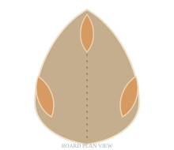
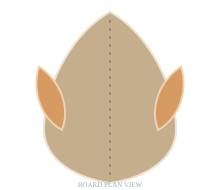
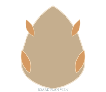
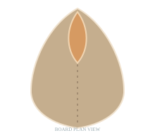

SCHRITT 01 / FINNENART
Womit surfst
du?
Wähle die Finnenart, mit der du starten möchtest. Anschließend kannst du Form, Profil und Geometrie frei anpassen.

01
Sidefin · Thruster
Asymmetrische Seitenfinne als Ausgangspunkt für dein Thruster-Setup.
Setup auswählen ↗
02
Keel · Twin
Breite, flachere Seitenfinne für klassische Twin-Fin-Boards.
Setup auswählen ↗
03
Quad · Sidefin
Seitenfinne als Basis für vordere oder hintere Quad-Finnen.
Setup auswählen ↗
04
Singlefin
Eine einzelne Centerfinne. Immer mit US Box.
Centerfin gestalten ↗